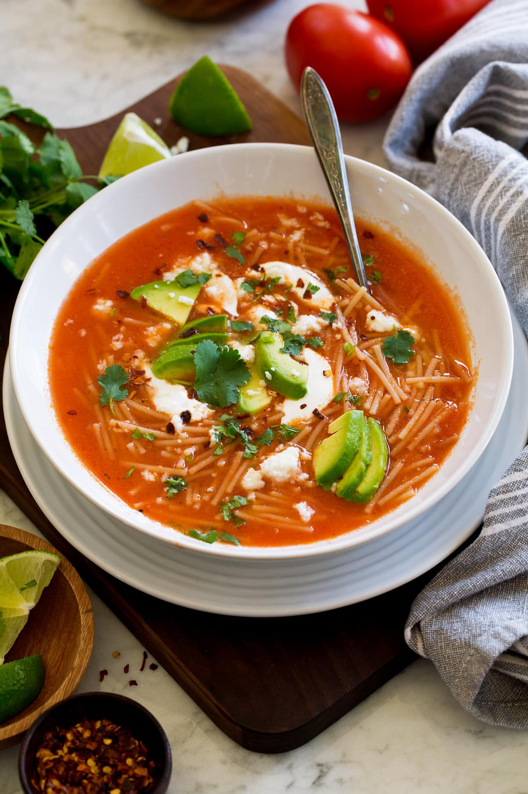

Sopa de Fideo Recipe
If you want more recipes, click here to go back to main page!

What is Sopa de Fideo?
Sopa de Fideo is a tasty ecuadorian dish made with love. 💕 This comforting noodle soup features vermicelli pasta toasted to a golden
brown, creating a nutty flavor base. The pasta is then simmered in a savory tomato broth, enriched with the sweetness of blended tomatoes and
the depth of homemade chicken or vegetable broth. It's a favorite in Ecuadorian homes, embodying the warmth and love of family meals.
Ingredients
Measurements made for a family of four.
- Pasta
- Fideo Pasta (Vermicelli Noodles): 6 ounces (about 170 grams)
- Vegetables
- Onion: 1 small, finely chopped
- Garlic: 2 cloves, minced
- Tomatoes: 3 medium, blended into a puree (or 1 can of tomato sauce, about 8 ounces)
- Carrots: 2 medium, peeled and diced
- Zucchini: 1 medium, diced
- Cilantro: 1/4 cup, chopped (optional, for garnish)
- Broth
- Chicken or vegetable broth: 6 cups
- Seasonings
- Salt: to taste
- Black pepper: to taste
- Misc
- Olive oil: 2 tablespoons
- Lime wedges: for serving (optional)
Cooking Instructions
Now that we have all of our ingredients prepared for our Sopa de Fideo, we can cook!
- Toast the Fideo Pasta:
-
Heat 2 tablespoons of olive oil in a large pot over medium heat. Add 6 ounces (about 170 grams) of fideo pasta and toast, stirring
frequently, until golden brown. Be careful not to burn them.
- Sauté the Vegetables:
- Add 1 small, finely chopped onion to the pot and cook until it becomes translucent.
- Add 2 minced garlic cloves and cook for another minute until fragrant.
- Add Tomato Puree:
- Pour in the blended tomatoes (3 medium tomatoes blended into a puree) or 1 can of tomato sauce (about 8 ounces).
- Cook for about 5 minutes, allowing the sauce to thicken slightly.
- Add Broth and Vegetables:
- Stir in 6 cups of chicken or vegetable broth.
- Add 2 medium peeled and diced carrots and 1 medium diced zucchini.
-
Bring the soup to a boil, then reduce the heat to low and let it simmer for about 15-20 minutes, or until the vegetables are tender and the
fideo pasta is cooked through.
- Season:
- Taste the soup and season with salt and black pepper to taste.
- Serve:
- Ladle the soup into bowls.
- Garnish with 1/4 cup of chopped cilantro if desired.
- Serve with lime wedges on the side (optional).